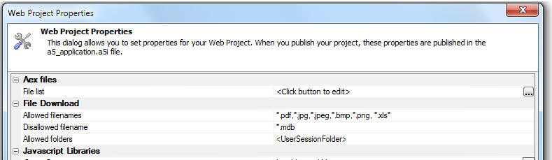

File Download Feature Pack Improvements
Download Folder
When you specify the download folder you can now use a relative folder name (relative to the application root), or you can use the special placeholder, <UserSessionFolder>, to indicate the user's session folder.Web Project Properties
There are new settings in the Web Project Properties dialog that allow you to control what types of files can be downloaded from the server to the user's machine and from which folders downloads are allowed.